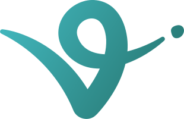

Agents
Connect a new agent
Connect a new agent
Pick how this agent will exist. All setup happens here — no CLI, no copy-pasting tokens between tabs.

Virtuals EconomyOS Recommended MCP
MCP
Virtuals EconomyOS Recommended
Spin up an agent with its own wallet, virtual card, inbox, and Claude as the brain. The agent autonomously transacts in the real world when watchers fire.
1
Name your agent
You'll see this name everywhere. Keep it short.
2
Connect Claude as the brain
Paste your Anthropic API key. We store it encrypted, scoped to this agent.
3
Provision wallet + inbox Automatic
We call the EconomyOS SDK to create an on-chain wallet and a dedicated email inbox for this agent. You hold the keys.
Will create: wallet (you custody), inbox @watcher.agent — takes about 2 seconds.
4
Set up the virtual card ~5 min, once
EconomyOS walks you through a guided card setup (signup → profile → payment method → spend limit). After this, every watcher fire pays autonomously. You only do this once, ever.
Opens the EconomyOS card flow in a side panel — stays inside Watcher, no new tab.
5
Max spending per fire
Hard ceiling. The agent can never spend more than this on a single fire, no matter what. Scope (which sources, which actions) is set per watcher.
Your keys never leave your device. Spend caps are signed on-chain by you, enforced by the network. After the card flow, every fire is autonomous — that's the bounty.
 Claude Desktop
Claude Desktop Cursor
Cursor Codex
Codex Cloudflare Agents
Cloudflare Agents